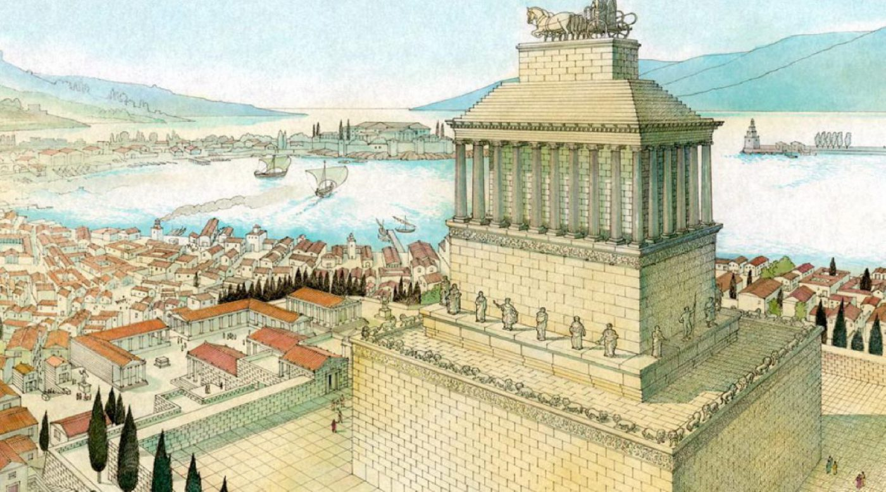
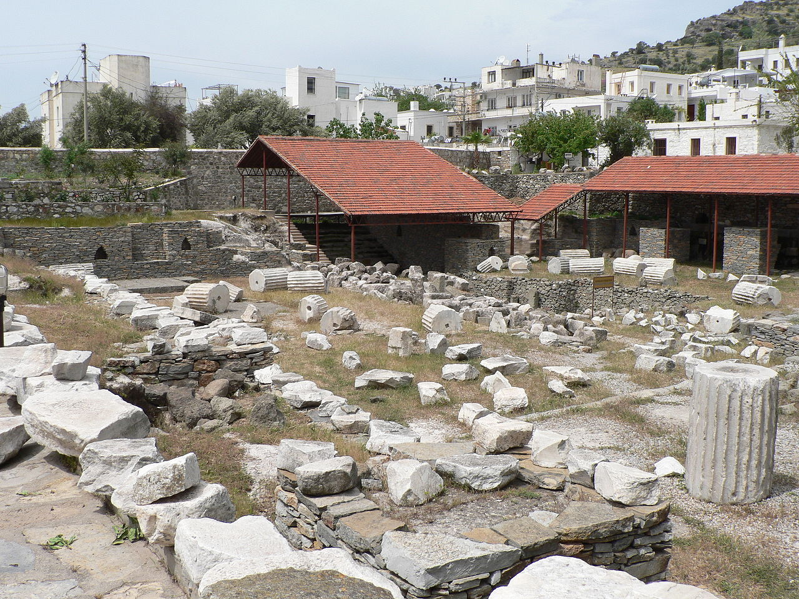

Był to grobowiec Mauzolosa, perskiego satrapy Karii wzniesiony ok. 350 p.n.e. Budynek został zaprojektowany przez architektów Satyrosa i Pyteosa na polecenie królowej-wdowy – Artemizji. Ozdobili go natomiast rzeźbiarze Skopas, Leochares, Timoteos i Bryaksis z Karii.
Mauzoleum nie przetrwało do naszych czasów – zaniedbana budowla pod wpływem upływu czasu, działań ludzi i trzęsień ziemi stopniowo popadała w ruinę. W 1404 roku tylko fundamenty i podstawa budynku pozostawały całe. W 1494 i 1522 joannici zagrożeni najazdem muzułmanów używali surowców z mauzoleum, aby wzmocnić swoją siedzibę, Zamek św. Piotra. W trakcie rozbiórki mauzoleum odkryty został sarkofag Mauzolosa, który następnie zaginął. Część zabytków z mauzoleum, m.in. rzeźby, znajduje się w British Museum w Londynie.
Mauzoleum było świątynią w jońskim porządku architektonicznym z kolumnadą, na którą składało się 40 kolumn. Na jej szczycie znajdowała się 24-stopniowa piramida z kwadrygą niosącą postaci zmarłego króla i jego małżonki – Artemizji. Była zbudowana na planie prostokąta o wymiarach 35,6 × 25 m i mierzyła 45 m wysokości.

Prawdopodobny wygląd mauzoleum

Tak wyglądają obecnie ruiny